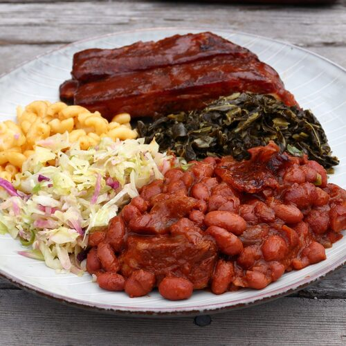

BARBECUE BAKED BEANS

Description:
Calling a recipe "the best" is always a risky proposition, since these things are purely subjective; so what I really should have called this is, "What Chef John Thinks is the Best Barbecue Baked Beans."
Ingredients:
- 1 pound dried red beans
- 3 quarts water
- 1 bay leaf
- 1 yellow onion, chopped
- 1 cup barbecue sauce
- ½ cup ketchup
- ⅓ cup apple cider vinegar
- ¼ cup packed light brown sugar
- 3 tablespoons molasses
- 2 tablespoons yellow mustard
- 1 teaspoon Worcestershire sauce
- 1 tablespoon smoked paprika
- ⅛ teaspoon cayenne pepper
- 1 teaspoon freshly ground black pepper
- 1 tablespoon kosher salt
Steps:
- Add dry beans to a bowl, cover with water, and let soak for 8 hours, or overnight.
- Drain beans and transfer to a large pot filled with 3 quarts of cold, fresh water. Add bay leaf, pork shoulder, and onion. Bring to a simmer over high heat. Reduce heat to medium-low and stir. Skim off foam if desired. Let simmer until beans are just tender, about 1 hour.
- While beans simmer, combine barbecue sauce, ketchup, vinegar, brown sugar, molasses, mustard, Worcestershire, smoked paprika, cayenne, black pepper, kosher salt, and garlic powder in a bowl with a whisk. Set aside until needed.
- Preheat the oven to 350 degrees F (175 degrees C).
-
Transfer tender bean mixture to a deep, 15x10-inch baking dish using a spider strainer. Pour in barbecue sauce mixture and 2 ½ cups of the bean cooking liquid. Place bacon slices on top.
- Bake uncovered in the center of the preheated oven until the liquids have reduced into a thick sauce, 2 to 3 hours.